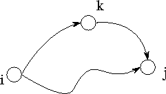
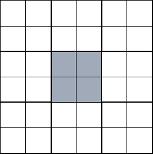

![[DBPP]](pictures//asm_color_tiny.gif)


![[Search]](pictures//search_motif.gif)
We conclude this chapter by using performance models to compare four different parallel algorithms for the all-pairs shortest-path problem. This is an important problem in graph theory and has applications in communications, transportation, and electronics problems. It is interesting because analysis shows that three of the four algorithms can be optimal in different circumstances, depending on tradeoffs between computation and communication costs.
Figure 3.23: A simple directed graph, G, and its adjacency matrix,
A.
The all-pairs shortest-path problem involves finding the shortest path
between all pairs of vertices in a graph. A graph
G=(V,E)
comprises a set V
of N
vertices, , and a set
E
V
of edges connecting vertices in V
. In a directed graph, each edge
also has a direction, so edges  and ,
and ,  ,
are distinct. A graph can be represented as an adjacency matrix
A
in which each element (i,j)
represents the edge between element
i
and j
.
,
are distinct. A graph can be represented as an adjacency matrix
A
in which each element (i,j)
represents the edge between element
i
and j
.  if there is an edge ;
otherwise, =0
(Figure 3.23).
if there is an edge ;
otherwise, =0
(Figure 3.23).
A path
from vertex  to vertex
to vertex  is a sequence of
edges ,
is a sequence of
edges ,  , ..., from E
in which
no vertex appears more than once. For example, , is a
path from vertex 1 to vertex 0 in Figure 3.23. The
shortest path between two vertices
, ..., from E
in which
no vertex appears more than once. For example, , is a
path from vertex 1 to vertex 0 in Figure 3.23. The
shortest path between two vertices  and
and  in a graph is the
path that has the fewest edges. The single-source
shortest-path problem requires that we find the shortest path from a
single vertex to all other vertices in a graph. The
all-pairs
shortest-path problem requires that we find the
shortest path between all pairs of vertices in a graph. We consider
the latter problem and present four different parallel algorithms, two
based on a sequential shortest-path algorithm due to Floyd and two
based on a sequential algorithm due to Dijkstra. All four algorithms
take as input an N
in a graph is the
path that has the fewest edges. The single-source
shortest-path problem requires that we find the shortest path from a
single vertex to all other vertices in a graph. The
all-pairs
shortest-path problem requires that we find the
shortest path between all pairs of vertices in a graph. We consider
the latter problem and present four different parallel algorithms, two
based on a sequential shortest-path algorithm due to Floyd and two
based on a sequential algorithm due to Dijkstra. All four algorithms
take as input an N
 N
adjacency matrix A
and
compute an N
N
adjacency matrix A
and
compute an N
 N
matrix S
, with the
length of the shortest path from
N
matrix S
, with the
length of the shortest path from  to
to  , or a distinguished
value (
, or a distinguished
value ( ) if there is no path.
) if there is no path.
Floyd's all-pairs shortest-path algorithm is given as
Algorithm 3.1. It derives the matrix S
in
N
steps, constructing at each step k
an intermediate matrix
I(k)
containing the best-known shortest distance between each
pair of nodes. Initially, each is set to the length of
the edge  , if the edge exists, and to
, if the edge exists, and to  otherwise.
The k
th step of the algorithm considers each
otherwise.
The k
th step of the algorithm considers each  in turn
and determines whether the best-known path from
in turn
and determines whether the best-known path from  to
to  is
longer than the combined
lengths of the best-known paths from
is
longer than the combined
lengths of the best-known paths from  to and from
to and from  to
to
 . If so, the entry
. If so, the entry  is updated to reflect the shorter
path (Figure 3.24). This comparison operation is performed
a total of times; hence, we can approximate the sequential cost
of this algorithm as , where
is updated to reflect the shorter
path (Figure 3.24). This comparison operation is performed
a total of times; hence, we can approximate the sequential cost
of this algorithm as , where  is the cost of a single
comparison operation.
is the cost of a single
comparison operation.

Figure 3.24: The fundamental operation in Floyd's sequential
shortest-path algorithm: Determine whether a path going from to
 via
via  is shorter than the best-known path from
is shorter than the best-known path from  to
.
to
.
The first parallel Floyd algorithm is based on a one-dimensional, rowwise domain decomposition of the intermediate matrix I and the output matrix S . Notice that this means the algorithm can use at most N processors. Each task has one or more adjacent rows of I and is responsible for performing computation on those rows. That is, it executes the following logic.
for i
= local_i_start to local_i_end
for j = 0
to N-1
(k+1) = min(
endfor
endfor
endfor
for k = 0
to N-1
 (k),
(k),  (k)+(k))
(k)+(k))
Figure 3.25: Parallel version of Floyd's algorithm based on a
one-dimensional decomposition of the I
matrix. In (a), the data
allocated to a single task are shaded: a contiguous block of rows. In
(b), the data required by this task in the k
th step of the
algorithm are shaded: its own block and the k
th
row.
In the k
th step, each task requires, in addition to its local
data, the values , , ...,  , that is, the
k
th row of I
(Figure 3.25). Hence, we specify
that the task with this row broadcast it to all other tasks. This
communication can be performed by using a tree structure in
, that is, the
k
th row of I
(Figure 3.25). Hence, we specify
that the task with this row broadcast it to all other tasks. This
communication can be performed by using a tree structure in  steps. Because there are N
such broadcasts and each message has
size N
, the cost is
steps. Because there are N
such broadcasts and each message has
size N
, the cost is
Notice that each task must serve as the ``root'' for at least one
broadcast (assuming ). Rather than defining P
binary
tree structures, it suffices to connect the P
tasks using a
hypercube structure (Chapter 11), which has the useful
property of allowing any node to broadcast to all other nodes in  steps.
steps.
An alternative parallel version of Floyd's algorithm uses a
two-dimensional decomposition of the various matrices. This version allows
the use of up to  processors and requires that each task execute
the following logic.
processors and requires that each task execute
the following logic.
for i
= local_i_start to local_i_end
for j
= local_j_start to local_j_end
endfor
endfor
endfor
for k = 0
to N-1
 (k+1) = min(
(k+1) = min( (k), (k)+
(k), (k)+ (k))
(k))
Figure 3.26: Parallel version of Floyd's algorithm based on a
two-dimensional decomposition of the I
matrix. In (a), the data
allocated to a single task are shaded: a contiguous submatrix. In
(b), the data required by this task in the k
th step of the
algorithm are shaded: its own block, and part of the k
th row and
column.
In each step, each task requires, in addition to its local data, values from two tasks located in the same row and column of the 2-D task array (Figure 3.26). Hence, communication requirements at the k th step can be structured as two broadcast operations: from the task in each row that possesses part of column k to all other tasks in that row, and from the task in each column that possesses part of row k to all other tasks in that column.
In each of N
steps,  values must be broadcast to the
values must be broadcast to the
 tasks in each row and column, and the total cost is
tasks in each row and column, and the total cost is
Notice that each task must serve as the ``root'' node for at least one broadcast to each task in the same row and column of the 2-D task array. These communication requirements can be satisfied by connecting tasks in the same row or column in a hypercube structure.
Dijkstra's single-source
shortest-path algorithm computes
all shortest paths from a single vertex,  . It can also be used
for the all-pairs shortest-path problem, by the simple expedient of
applying it N
times---once to each vertex , ..., .
. It can also be used
for the all-pairs shortest-path problem, by the simple expedient of
applying it N
times---once to each vertex , ..., .
Dijkstra's sequential single-source algorithm is given as
Algorithm 3.2. It maintains as T
the set of vertices
for which shortest paths have not been found, and as the
shortest known path from  to vertex
to vertex  . Initially,
T=V
and all . At each step of the algorithm, the vertex
. Initially,
T=V
and all . At each step of the algorithm, the vertex  in T
with the smallest d
value is removed from T
.
Each neighbor of
in T
with the smallest d
value is removed from T
.
Each neighbor of  in T
is examined to see whether a path
through
in T
is examined to see whether a path
through  would be shorter than the currently best-known path
(Figure 3.27).
would be shorter than the currently best-known path
(Figure 3.27).
Figure 3.27: The comparison operation performed in Dijkstra's
single-source shortest-path algorithm. The best-known path from the
source vertex to vertex is compared with the path that
leads from  to
to  and then to
and then to  .
.
An all-pairs algorithm executes Algorithm 3.2
N
times, once for each vertex. This involves  comparisons and
takes time F
, where
comparisons and
takes time F
, where  is the cost of a single
comparison in Floyd's algorithm and F
is a constant. Empirical
studies show that F
is the cost of a single
comparison in Floyd's algorithm and F
is a constant. Empirical
studies show that F
 1.6; that is, Dijkstra's algorithm
is slightly more expensive than Floyd's algorithm.
1.6; that is, Dijkstra's algorithm
is slightly more expensive than Floyd's algorithm.
The first parallel Dijkstra algorithm replicates the graph in each of P tasks. Each task executes the sequential algorithm for N/P vertices. This algorithm requires no communication but can utilize at most N processors. Because the sequential Dijkstra algorithm is F times slower than the sequential Floyd algorithm, the parallel algorithm's execution time is
The second parallel Dijkstra algorithm allows for the case when
P>N
. We define N
sets of P/N
tasks. Each set of tasks is
given the entire graph and is responsible for computing shortest paths
for a single vertex (Figure 3.28). Within each set of
tasks, the vertices of the graph are partitioned. Hence, the
operation
Find with minimum 
requires first a local computation to find the local vertex with minimum d and second a reduction involving all P/N tasks in the same set in order to determine the globally minimum . The reduction can be achieved by using the butterfly communication structure of Section 2.4.1, in steps. Hence, as the reduction is performed N times and involves two values, the total cost of this algorithm is

Figure 3.28: The second parallel Dijkstra algorithm allocates
P/N
tasks to each of N
instantiations of Dijkstra's single-source
shortest-path algorithm. In this figure, N=9
and P=36
, and one
set of P/N=4
tasks is shaded.
Table 3.7 summarizes the performance models developed for
the four all-pairs shortest-path algorithms. Clearly, Floyd 2 will
always be more efficient that Floyd 1. Both algorithms have the same
computation costs and send the same number of messages, but Floyd 2
communicates considerably less data. On the other hand, Floyd 1 is
easier to implement. Algorithms Dijkstra 1 and 2 will be more
efficient than Floyd 2 in certain circumstances. For example,
Dijkstra 1 is more efficient than Floyd 2 if P
 N
and
N
and
Table 3.7: Performance of four parallel shortest-path algorithms.
In addition to these factors, we must consider the fact that algorithms Dijkstra 1 and Dijkstra 2 replicate the graph P and P/N times, respectively. This replication may compromise the scalability of these algorithms. Also, the cost of replicating an originally distributed graph must be considered if (as is likely) the shortest-path algorithm forms part of a larger program in which the graph is represented as a distributed data structure.
Clearly, the choice of shortest-path algorithm for a particular problem will involve complex tradeoffs between flexibility, scalability, performance, and implementation complexity. The performance models developed in this case study provide a basis for evaluating these tradeoffs.
© Copyright 1995 by Ian Foster